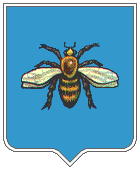
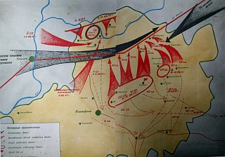

|
г. Климовичи

1. История
города.
2. В пламени
сражений.
3. Светлый час
освобождения.
4. Тень
Чернобыля.
5. Наши дни.
Город
рождается не за один день
и даже не за один год. Обычно он вырастает из предыдущих поселений,
которые могли существовать
на его месте не одно столетие.
Поэтому очень трудно, а зачастую и невозможно определить ту
временную границу,
от которой можно отсчитывать городскую историю.
Город Климовичи расположен на ровном, довольно
низком месте
при ручье Калинице, в 20 верстах от левого берега Сожа.
Первые упоминания о Климовичах относятся к XIV веку.
Тогда это была небольшая деревенька, находящаяся в собственности
шляхтичей Осмоловских.
Известность начинается не ранее XVII века, именно с 1626 г., когда
здесь был
основан монастырь доминикан, в настоящее время никаких следов этого
монастыря не осталось, не сохранилось о нём даже предания.
Правда, какого-то существенного влияния обитель на жизнь городка не
оказывала.
История Климович уходит в глубь веков. Предками климовчан
были славянские племена радимичей, которые расселялись в VIII
—
IX веках по рекам Сож и Днепр и их притокам. С IX по XIII века земли
Климовщины находились в составе Киевской Руси. Начиная с середины XIII
столетия вошли в состав Великого княжества Литовского. Первое
упоминание о городе относится к 1581 году. В то время Климовичи были
староством Мстиславского уезда, которым владел Матис Глинский. С конца
XVI века территория района входит в состав Речи Посполитой. После
первого раздела этой державы в 1772 году и по 1917 год Климовщина
входила в состав Северозападного края Российской Империи.
Климовичи принадлежат к беднейшим городам здешней губернии,
и по строениям более похожи на село, нежели на город. Жители, христиане
преимущественно, занимаются хлебопашеством и сельскими ремёслами, а
евреи - мелочной торговлею.
Вот как описывал город того времени С.И. Ярославцев,
преподаватель Климовичской мужской гимназии в своей работе
«Город Климовичи Могилёвской губернии:
географическо-статистический очерк»:
" На
нового человека, приезжающего первый
раз в Климовичи и едущего с ближайшей железнодорожной станции
(Рославль, Риго-Орловской ж.-д.) город производит самое безотрадное
впячетление. После утомительного пути по глубокопесчаной дороге, с
поворотом усаженного берёзами " большака ", вы вдруг въезжаете в бедную
улицу с маленькими хатками деревенского типа, крытыми соломой или "
дором " (гонтом). Ни общего вида города, ничего, чтобы говорило о
городе. Только расположенное при дороге, в некотором расстоянии от
города, ремесленное училище с двухэтажным каменным зданием, может
говорить о близости города, но и оно, окружённое с трёх сторон садами и
парком, в которых там - сям разбросаны деревянные строения, с обширной
пасекой - скорее напоминает усадьбу, чем городское учреждение...
Маленькие невзрачные домики скрываются в зелени
многочисленных садов, разбросанных по слегка всхолмлённой поверхности
города и отчётливее выделяются каменные и лучшие деревянные постройки,
лежащие в более высокой части города...
Ваш экипаж долго подпрыгивает и грохочет по скверной мостовой
длинной улицы, спускается с горы, переезжает через речушку с
болотистыми берегами, поднимается на гору - и только здесь тип построек
начинает меняться: встречаются дома большого размера, крытые тёсом и
железом, мелькают вывески почты, булочной, дилижансной конторы,
гостинницы и, наконец в конце улицы, упирающейся в большой теннистый
сад, в глубине которого краснеет единственный на этой улице каменный
дом."
В мае 1921 года в городе открыли железнодорожную станцию на
линии Орша — Унеча. Кстати, еще в ХIХ веке дорог в крае
хватало: Варшавское шоссе пересекало уезд с востока на запад, три
станции — Хотовижская, Звенчатка и Шумовка —
обслуживали 50 верст. А из Климовичей до Звенчатки — 21
верста. Были построены военно–коммерческие, торговые и
почтовые дороги. Кстати, в
Памятной книжке Могилевской губернии
за 1900 год помещены два
интересных документа. Они нас поближе и познакомят с горожанами и
жителями уезда вообще. Первый — расписание о получении и
отправлении почт в уездных почтовых конторах. Смотрим раздел по
Климовичской почте:
«Почты из Могилева получаются
по вторникам и субботам в 6 часов пополудни; а отправляются в Могилев
по четвергам и воскресеньям в 4 часа пополудни. Набор корреспонденции
во все места производится по воскресеньям и четвергам до 12 часов
пополуночи...»
А что касается второго документа, то он представляет собой ведомость о
периодических изданиях, получаемых в Могилевской губернии за 1900 год.
Что читали и выписывали жители Климовичей и окрестностей? Из ежедневных
газет явный лидер — «Биржевые ведомости»
(253 экземпляра), затем идут «Свет» (63),
«Сын Отечества» (14), «Правительственный
вестник» (15), «Новое время» (7),
«Новости» (2). Самой большой популярностью из
еженедельников пользовались «Нива» (88
подписчиков), «Сенатские ведомости» (46) и
«Родина» (44).
У «Недели»
— 6 подписчиков, у «Церковного вестника»
— 3. «Исторический вестник» выписывал
лишь только один. Как, впрочем, и один экземпляр издания «Мир
Божий». 6 книгочеев выписывали «Вестник иностранной
литературы».
Не следует забывать при этом, что
Климовичский уезд — вовсе не район. В уезд входили еще и
Костюковичи, и Хотимск, и другие окрестности, разошедшиеся нынче по
иным административно–территориальным единицам, в том числе
— и находящиеся в составе Российской Федерации. Хотя и выводы
о малой интеллигентности жителей края, основанные только на почтовой
информации, вряд ли будут точными. Например, в городке в
1910–е годы работали сразу две гимназии — мужская и
женская. Причем в мужской выписывали 29 журналов. А библиотека для
учащихся составляла 2.476 книг. Была еще и фундаментальная —
с фондом в 3.380 книг. Так что по улицам Аллейной, Башмачной,
Воскресенской, Грязной, Дворянской, Зеленой, Кричевской, Михайловской,
Площадной, Правосудной, Свирельской, Судейской... да слободам
Березовка, Федоровка, Солдатская, Давыдовка, Форштад, Цыгановка и
площадям Базарная и Ивановская ходили люди не менее достойные, чем их
наследники. К тому же, как правило, трезвенники. Поскольку в декабре
1900 года собрание уполномоченных (а еще говорят, что уполномоченные
— исключительно большевистское изобретение) приняло
постановление, запрещающее публичное распитие крепких напитков в центре.
Впрочем, по поводу аристократии приведу цитату из
исследования учителя
мужской гимназии С.Ярославцева «Город Климовичи Могилевской
губернии»:
«Интеллигенции... в Климовичах,
по сравнению с другими уездными городами, довольно много. Кроме обычных
уездных учреждений, здесь находится многолюдное акцизное управление
3–го округа, ведающее Климовичским, Мстиславским, Чериковским
уездами, два земских начальника, инспектор народных училищ. Но особенно
заметную струю в общественную жизнь Климовичей внесло открытие в городе
мужской и женской правительственной гимназий».
В 1924 году был создан Калининский округ с центром
в городе Климовичи, в состав которого вошло 10 районов, а с 1938 года
район
становится самостоятельной территориальной единицей.
Важнейшие события 20 - 30 годов XX века, происходившие в
Советском Союзе (индустриализация, коллективизация, культурная
революция), нашли свое отражение и в жизни Климовщины.
В 1940 году в районе насчитывалось 6 крупных промышленных
предприятий (силикатный
завод, промкомбинат, хлебозавод, маслозавод, ремонтно-механические
мастерские, торфопредприятие «Великий Мох»), 163
колхоза и 4 МТС.
В сфере образования, здравоохранения и культуры
действовало 115 школ (в том числе 11 средних и 15 семилетних), 1
районная и 5 сельских больниц, 25 ФАПов, 27 клубов и 42 библиотеки.
Самой
трагичной и одновременно самой
героической страницей в истории Климовичского района стала Великая
Отечественная война.
В первый день боевых действий на территории Беларуси
советские войска
потеряли 738 самолетов и на долгое время остались без воздушного
прикрытия. Зачастую бойцы не имели необходимого количества боеприпасов.
Противником были повреждены линии связи.
Командование Западного фронта
утратило управление войсками, не удалось организовать предполагавшиеся
контрудары и задержать врага в приграничной полосе. Многие части
оказались в окружении войск противника и с тяжелыми боями прорывались
на соединение со своими войсками.

В начале июля огненный вал войны достиг восточных
районов Белоруссии. Группа армий "Центр" стремилась с ходу овладеть
Смоленском, окружить здесь и разгромить основной костяк Западного
фронта, выйти на прямое направление к Москве.
Местных жителей стали мобилизовывать на оборонные работы под
Кричевом, расположенном в 20 км. к северо-западу от Климовичей на шоссе
Варшава – Рославль – Москва.
К комсомольцам заходили из райкома, к остальным –
из горсовета: «От вас один человек на окопы!» Жить
нужно было прямо на месте работы. 10 июля Кричев начали сильно бомбить,
люди стали проситься назад к семьям, их отпустили, и кто пешком, кто на
машине вернулись домой.
14 июля на тринадцати грузовиках эвакуировались семьи
«партактива и райкомовских работников». Для простых
людей
было два пути – по железной дороге и на подводах. Не все
решались
попробовать сесть в один из эшелонов, последний из которых прошёл через
Климовичи в середине июля.
Во второй половине июля Ставка Верховного Командования
создала Центральный фронт, в состав которого вошли три армии: 13-я,
21-я и 3-я. Штаб 13-й Армии с конца месяца и до 10 августа находился в
лесу, западней д. Родня Климовичского района.
1 августа 2-я танковая группа немецких войск под
командованием Г. Гудариана осуществила удар по правому крылу
центрального фронта в направлении Кричев - Рославль и Студенец -
Шумячи. Соединения нашей 13-й Армии, которые были ослаблены предыдущими
боями, не выдержали вражеского натиска и начали отходить на восточный
берег р. Остёр. 3 - го августа враг захватил Рославль.
Беспримерный героизм и стойкость демонстрировали советские
воины в каждом бою... В эти дни активно действовали бронепоезда.
Так, личный состав бронепоезда под командованием лейтенанта Н.В.
Крюкова у
станции Климовичи уничтожил 12 танков и до батальона пехоты противника,
а бронепоезд № 44 в районе Костюковичи рассеял до двух батальонов
пехоты и подбил несколько фашистских танков.
Однако обстановка оставалась тяжёлой. С 14 августа 1941 года
началась оккупация территории района немецко-фашистскими захватчиками.В
этот же день немецкие
войска овладели Костюковичами, 15 - Хотимском, 17 - захватили узловую
станцию Унеча.
Климовичи находились под немецкой оккупацией 2 года и 1,5
месяца — с 10 августа 1941 года до 28 сентября 1943 года.
Первым делом нацисты организовали полицию из местных жителей. Первыми в
полицию записались братья Осмоловские.
Старостой был назначен бывший плотник Щербаков.
Сразу
после захвата города везде был развешен приказ коменданта:
«Кто
переступит границу города, того расстреляют вместе с семьёй»,
а
«лицам еврейской национальности выходить из своих домов
нельзя,
туда-то (список мест) заходить нельзя». К евреям нельзя было
приходить, за это полагался расстрел. И взрослых, и детей на рукаве
заставляли носить желтые метки — шестиконечные звезды.
В
«Акте Климовичской районной комиссии в содействии в работе
ЧГК» от 7 декабря 1944 года зафиксировано, что в Климовичах
евреев заставили под страхом смерти пометить свои жилища крупными
шестиконечными звёздами.
Катастрофа Красной Армии в начале войны была следствием
существования в
стране жёсткого тоталитарного режима. Одной из причин этой катастрофы
была некомпетентность, самоуверенность партийного, государственного
аппарата в центре и на местах.
Руководство БССР в первые дни войны призывало население
сохранять
спокойствие, убеждало людей, что враг не пройдёт. Принимались
постановления о борьбе с
«паникёрами». Оборона западных военных
округов оказалась
неподготовленной. В результате репрессий военных кадров во второй
половине 30-х гг. было уничтожено около 40% наиболее подготовленных,
опытных офицеров, генералов, маршалов.
Маршал А.М. Василевский впоследствии заявил, что без репрессий 1937 г.,
возможно, войны 1941 г. не было б вообще.
к
содержанию
В период оккупации фашисты столкнулись на
Климовщине с ожесточенным сопротивлением. На территории района
действовало комсомольско-молодежное подполье и следующие партизанские
отряды: 45-й «За Родину», 110-й
«Хлебцова», «Макеевичский»,
«Валентина Майорова», «Алеся»,
«Чапай», «Ананьева».
Осенью 1943 г. советские войска на центральном направлении
прорвали ряд
оборонительных рубежей противника и подошли к восточным районам
Белоруссии.
Противник, лишившись важных для него узлов обороны
— Смоленска, Рославля, Демидова, стремился задержать
наступление наших войск на промежуточных рубежах. Однако войска
Калининского и Западного фронтов продолжали неотступно преследовать
врага. За период с 20 по 25 сентября на всем фронте наступления
советские войска продвинулись на 40–60 км.
В освобождении Климовичского района с 26 по 30 сентября
принимали
участие 6 дивизий 50-й армии Западного фронта и 2 дивизии 10-й армии
Западного фронта. Первыми вступили в Белоруссию на территории
Климовичского района, после форсирования реки Ипуть воины 238-й
Карачевской (генерал-майор Красноштанов И.Д.) стрелковой дивизии.
26 сентября её 837-й стрелковый полк ночью вышел на рубеж д. Артёмовка,
830-й стрелковый полк – Пустош-Петровского.
Вот что пишут сами ветераны этой дивизии в книге
«На переднем
крае Великой Отечественной» стр.37-38:
"Глубокой ночью батальоны 830 и 837 полков
ворвались в город и завязали уличные бои. Удар по фашистам в Климовичах
оказался сильным и неожиданным по своему замыслу.
В этот день (27.09.43) город был освобожден. К исходу 27 сентября в
полночь последовало сообщение московского радио об освобождении города
и ж\д станции Климовичи. Вскоре после этого сообщения командир дивизии
генерал Красноштанов И.Д. приказал командиру 837 полка: "К утру
умереть, но станция должна быть наша".
Приказание выполнил 1 батальон полка под командованием капитана
Абрамова С.И. 28 сентября 1943 г. в 4 часа 00 мин была освобождена
железно-дорожная станция Климовичи.
Вторым на территорию района вошёл 1223-й стрелковый полк
369-й
Карачевской (генерал-майор И.В. Хазов) стрелковой дивизии, который
овладел населёнными пунктами Гульки и Слабодка.
До 30 сентября 1943 г. район полностью был освобожден.
Наступление
войск левого крыла Западного фронта на рославльском направлении
осуществлялось в тесном взаимодействии с войсками Брянского фронта,
проводившими в это время Брянскую наступательную операцию.
В
середине сентября войска Брянского фронта форсировали реку Десна, а 17
сентября освободили Брянск и Бежицу. К 30 сентября войска Брянского
фронта вышли на рубеж Кричев — Ветка, а к 2 октября
— к
реке Проня на участке от Петуховки до Пропойска (ныне Славгород) и
далее по левому берегу реки Сож.
С выходом войск Калининского и Западного фронтов на рубеж
Усвяты — Рудня — Ленино — Дрибин
— Пропойск (Славгород) наступавшие войска встретили
организованное сопротивление противника. Попытки развить наступление на
оршанском и могилёвском направлениях успеха не имели.
За период оккупации немецко-фашистские захватчики оставили
кроваво-опустошительный след на территории Климовщины. Гитлеровцы
расстреляли 1295 жителей района, угнали в Германию 2538 человек.
Огромный урон был нанесен экономике, культуре, образованию и
здравоохранению района (были разрушены силикатный, известковый,
лесопильный и ряд других заводов, разграблены 162 колхоза, уничтожены
38 школ и 12 клубов).
В течение Великой Отечественной войны в Красную Армию были
призваны и ушли добровольцами 10 900 уроженцев района, 5700 из них
погибли. В боях за советскую Родину за мужество и отвагу 4250 климовчан
были награждены орденами и медалями. Высшей награды СССР - Золотой
Звезды Героя Советского Союза - были удостоены:
И.С. Николаев, М.А. Старовойтов, А.З. Петушков, А.С. Петушков, М.Ф.
Рябчевский, Д.П.
Жмуровский, Д.М. Цирубин, СВ. Романец.
Полными кавалерами орденов Славы стали И.К. Куприенко и А.В. Клецко.
Воинские
захоронения и памятные знаки возле воинских захоронений
Климовичского района.
к
содержанию
26 апреля 1986 года – на 4-м блоке атомной
электростанции в Чернобыле прогремел взрыв. На часах был 1 час 23
минуты. Затем последовал второй взрыв, возник пожар.
Авария на ЧАЭС стала самой
крупной в истории человечества техногенной
катастрофой,
которая своим "чёрным крылом" охватила Климовичский район, сыграла свою
немаловажную
роль в его жизни и развитии.
Радиоактивному загрязнению
подверглись 4 сельских совета: Савиничский, Лобжанский, Высоковский,
Гусарский.
Досталось и городу Климовичи. Это значит, 29 населённых пункта района,
где в 1986 г. проживало 3376 человек, и город, где проживало 16,3 тыс.
человек.
Для переселения жителей построены три жилых посёлка в
деревнях Киселёва Буда, Высокое, Тимоново Климовичского района на 259
семей. Переселено на начало 1993 г. в эти посёлки и город Климовичи 218
семей, самостоятельно выехало из района 10 семей и по свободному
переселению - 45 семей.
Проводилась работа по обследованию земельных угодий на
загрязнение радионуклидами.
Район делал всё возможное, чтобы сберечь здоровье людей от пагубного
воздействия радиации. В хозяйствах и городе, где загрязнение цезием-137
от 1 Ки/м² и выше, делались денежные выплаты, предоставлялись
льготы.
В настоящее время льготы и денежные выплаты отменены не
только в хозяйствах и городе, но и ликвидаторам аварии на ЧАЭС.
Между тем, по данным ГУ «Республиканский
научно-практический центр радиационной медицины и экологии
человека», существует тенденция роста смертности среди
населения, проживающего на загрязненных территориях Беларуси.
Ежегодно смертность среди взрослого населения увеличивается в среднем
на 4,3%.
За девять месяцев 2007 года впервые признаны инвалидами 544 человека,
причинная связь инвалидности с последствиями катастрофы на ЧАЭС
установлена у 132 человек.
На территории в зоне загрязнения хроническими больными
признано 49% населения, в том числе детей — 14,8%, подростков
— 23,4%, взрослых — 60,3%.
У всех категорий пострадавших от катастрофы на ЧАЭС наблюдается рост
заболеваемости щитовидной железы, болезней системы кровообращения,
психоневрологических расстройств, которые по существующим в медицине
представлениям не относятся к радиационно-обусловленным.
к
содержанию
Климовичский район расположен в
восточной части Белоруссии. Территория района составляет 1542,78 кв.
км, в том числе пашни 560,46, лесов 566,87, болот 57,66, водоёмов 13,06
кв.км.
Район граничит с Чериковским, Кричевским, Хотимским,
Костюковичским и Краснопольским районами Могилёвской области, Шумячским
и Ершичским районами Смоленской области России. Расстояние от районного
центра г.Климовичи до Минска 340 км, до Могилёва
140 км, до Москвы 540 км.
В настоящее время численность населения района составляет
34,1 тысячи человек. Половина из них проживает в сельской местности, на
территории 10 сельских Советов. Основные направления сельского
хозяйства района выращивание зернобобовых и
картофеля, в животноводстве производство мясомолочной
продукции. Производством сельскохозяйственной продукции в районе
занимаются 8 совхозов, 6 колхозов, подсобное хозяйство
ликероводочного завода, свиноводческий комплекс и птицефабрика.
Выпуск промышленной продукции в районе осуществляют 5
предприятий: ликероводочный завод, комбинат хлебопродуктов,
хлебозавод, ОАО «Климовичский молочный завод» и
завод металлоизделий.
Строительный комплекс района представлен 7-ю строительными
организациями.
Здравоохранение представлено центральной районной
больницей на 300 мест, 2 больницами сестринского ухода на 40 мест, 4
амбулаториями и 22 фельдшерскоакушерскими пунктами.
Торговое обслуживание населения
обеспечивается в основном
125 магазинами РайПО, 10 из которых было открыто в последние годы, в
том числе 7 магазинов на селе, 28 фирменными магазинами и 10 торговыми
точками частных предпринимателей.
Магазины: большие и маленькие, государственные и частные -
они почти на каждом шагу. Предлагают нам широкий выбор разнообразных
товаров на любой вкус и запросы.
Вот что представляла собой торговля в начале XX
века, С.И. Ярославцев пишет:
«Торговля в городе носит такой
же характер, как и в других городах черты оседлости, и может быть
охаректиризована двумя словами: понемногу и всего. Лавок, лавчонок,
ларьков такое множество, что невольно приходится удивляться, откуда
хватает покупателей на всех продавцов. Помимо этого, нет, кажется ни
одного еврея в городе, который бы ни торговал с рук: здесь и
безпатентная продажа папирос, продажа с рук старого платья,
птицы, фруктов, яиц, масла, рыбы, многочисленные тайные шинки. Почти
каждая еврейка - мать, жена, сестра - раздобыв 3 - 4 рубля, начинает
торговать с рук, Кто добудет 100 -200 рублей - открывает лавку. И лавок
в Климовичах, по отношению к числу жителей, необычайно много,
вследствие чего подавляющее большинство лавок из числа самых
мелких...»
Платные
и бытовые услуги
населению оказывают 53 предприятия и организации района. Среди них УКП
«Коммунальник», автопарк № 9, район газоснабжения,
районные узлы почтовой и электрической связи, комбинат бытового
обслуживания. Узлом электрической связи в 2001 году сдана в
эксплуатацию новая электронная телефонная станция емкостью на 2400
номеров. В районе работают 22 сельские телефонные станции и 3
городских, оказываются коллективные услуги на пользование интернетом,
электронной почтой и факсом. Почтовая связь представлена 30
стационарными отделениями и 1 передвижным.
Образование представлено 16 средними школами, 7 базовыми и 6
начальными школами, 22 детскими дошкольными учреждениями,
вспомогательной школойинтернатом, многопрофильным центром
детей и молодежи, детскоюношеской спортивной школой,
учебнопроизводственным комбинатом, ПТУ 214 и
сельскохозяйственным техникумом. Открыты интернат и детский приют
«Огонёк» для социальных сирот, в летнее время
работает оздоровительный лагерь «Орлёнок». В 2001
году сдано в эксплуатацию здание СШ № 3.
Из учреждений культуры в районе имеется: Центр культуры, 8
сельских Домов культуры, 25 сельских клубов, 35 библиотек, районный
краеведческий музей, художественная школа, городская и сельская школы
искусств с четырьмя филиалами и Дом ремесел.
Район активно поддерживает международные связи. Этому
способствует работа благотворительного объединения
«Лайонсклуб «Климовичи»,
входящий в состав Международной Ассоциации Лайонсклубов, и
контакты, установленные с благотворительными инициативами по
оздоровлению детей.
Ежегодно в районе проводится Международный фестиваль детского
творчества «Золотая пчёлка», в котором принимают
участие свыше 800 юных дарований из различных городов Беларуси, России,
Казахстана, Кыргызстана, Молдовы, Украины и Латвии.
Земля Климовщины богата талантами, славна боевыми подвигами,
трудовыми традициями. Среди уроженцев района 8 Героев
Советского Союза, 2 полных Кавалера Ордена Славы, 6 героев
Социалистического Труда, 10 Кавалеров Ордена Ленина, 41 кавалер ордена
Трудового Красного Знамени, 15 боевых генералов. Есть на Климовщине и
другие заслуженные люди: писатели, спортсмены, учителя, врачи и люди
других профессий, которые пользуются уважением не только в районе, но и
в нашей стране и за рубежом.
Много прежней исторической памяти, несмотря на перипетии
Великой Отечественной войны, осталось в облике современных Климовичей.
Самый яркий памятник — православная Михайловская церковь.
Построена она в середине ХIХ века. Открытый в 1984 году
историко-краеведческий музей свидетельствует, что есть и в Климовичах,
как и по всем уголкам нашей страны, «патриотизм к родному
месту». А кроме экспозиции, которая говорит сама за себя,
ждут здесь своего читателя рукописные материалы местных краеведов. Не
думая, как пробиться в столичные издательства, они жизнь свою отдавали
воссозданию исторической правды. Пройдя Каширский рудник и долгую жизнь
в Коми АССР, вернулся на родину Франциск Осмоловский. Вернулся и успел
написать книгу «Климовичи и Климовичский район».
Оставил после себя многостраничную рукопись Владимир Иосифович
Шевердо...
Известны Климовичи и тем, что на
территории города в 1804 г. был найден крупнейший в истории Беларуси
клад античных монет, спрятанный, видимо, во II в. н. э., аналогов
которому нет и поныне.
Находка была сдана в Петербург – в
придворное казначейство.
В нем было 1815 бронзовых и серебряных монет - динариев первых римских
императоров. Через какое-то время сокровища переехали в
Эрмитаж. Но задержались там недолго, вновь вернулись в казначейство.
Дальнейшая судьба клада
неизвестна – он пропал. Сохранилось лишь описание, которое в
своих работах приводят ученые-историки, специализирующиеся в
нумизматике. А жаль. Ведь не пропади монеты, их можно было бы увидеть в
экспозиции, скажем, какого-нибудь крупного музея России. И прочитав,
что «найдены они в Климовичах», почувствовать
значимость небольшого белорусского городка для исторической науки.
Экспозиция по истории Древнего мира, созданная в 1984 году в
Климовичском краеведческом музее, должна вот-вот пополниться
30 новыми экспонатами.
В 10 километрах от райцентра поисковый отряд исторического факультета
Могилевского университета им. А.Кулешова обнаружил стоянку первобытных
людей.
Весь июль в районе деревни Рудня шли масштабные раскопки – и
часть находок была передана для музейной демонстрации.
Поселение, найденное на левом берегу реки Сож, относится к периоду
позднего неолита (3-е – нач. 2-го тысячелетия до н.э.). Из
раскопа
площадью 96 квадратных метров археологи извлекли более 6,5
тысячи находок. Среди них – наконечники стрел,
скребки, ножи, топоры и резцы.
Особую ценность представляют
фрагменты лепной керамики с богатым
гребенчатым орнаментом,
наконечники копий, дротиков и стрел треугольной и ромбовидной формы, а
также тесла, которыми древние люди, скорее всего, делали лодки.
Археологи отмечают высокое мастерство кремнеобработки и считают, что
эта стоянка принадлежала первым в Климовичском районе древним
скотоводам-земледельцам.
Впрочем, немало интересного, похоже, осталось в земле. Часть раскопа
близ деревни Рудня пришлось законсервировать до следующей весны.
Но
специалисты убеждены: темные пятна, обнаруженные в грунте одного из
горизонтов, – ни что иное, как неолитические
жилища. А значит, до очередного открытия – рукой подать.
Летом 2008 года, во время благоустройства двора, жительница
деревни (или, как стало модно выражаться - агрогородка) Милославичи,
Ольга Михайловна Карасёва нашла на своём приусадебном участке клад
– 150 старинных монет, среди них встречаются монеты времён
правления Николая I,
Александра II, Николая II, которые датируются с 1825 по 1917 годы.
Некоторые из них имеют императорский вензель. Номинал монет - денежка,
одна, две, три, пять копеек.
А еще в земле были осколки старинных горшков.
По некоторым версиям местных жителей, на месте, где стоит дом
Карасёвых, некогда находилась лавка по продаже керосина или корчма,
которую держал еврей. Вот он, видимо, и копил деньги.
КСТАТИ
Это уже третий клад, найденный в Климовичском районе. В 1926 году здесь
нашли 201 куфическую дерфему - монеты, которые в те времена были
распространены и в Средней Азии, и в Европе. Но, к сожалению, этот клад
также утерян, в музее осталось только его описание.
430-летний юбилей.
Несмотря на дождливую и ветренную погоду 17 декабря 2011
года, жители нашего
города с самого утра торопились выйти на улицу – Климовичи
встречали юбилей!
Из громкоговорителей лилась музыка, звучали стихи, что сразу же
задавало праздничный тон.
В 11 часов утра на площади 50-летия Великого Октября начались
праздничные мероприятия, посвященные 430-летию со дня первого
письменного упоминания города Климовичи.
Бойко шла торговля, а жителей
и гостей города радовали своим творчеством артисты из соседних
Костюковичского, Кричевского, Чериковского, а также Хотимского районов.
Посмотреть было на что. Песни, танцы и частушки собирали у каждого
стенда своих почитателей. Чего здесь только не было –
блестели золотом самовары, манили ароматом румяные блины, пироги и
ватрушки, радовали глаз и напоминали о щедром лете аппетитные соленья и
варенья… С удовольствием участники демонстрировали и свои
рукоделия.
С другой стороны парка символический основатель города –
весёлый Клим,
зазывал гостей посетить тематические площадки учреждений образования.
Богатой на развлечения была праздничная программа районной гимназии. У
входа на свою площадку ребята повесили плакат, на котором все желающие
могли написать поздравления родному городу.
Учащиеся СОШ №4 организовали выставку своих поделок, оформили стенд,
рассказывающий об
истории города, а также предлагали гуляющим занимательные игры,
перебрасывались заготовленными заранее бумажными снежками –
раз уж зима подкачала и не подсыпала настоящего снега.
Задорными шутками и танцами привлекала площадка СШ №1.
Но больше всех волновалась и радовалась посетителям малышня начальной
школы, у которой веселых
четверостиший для гостей было не счесть.
В районном центре культуры состоялся театрализованный концерт,
посвященный знаменательной дате.
А в краеведческом музее в этот день открылась выставка картин
художника-земляка Фёдора Киселёва.
Не обошлось на дне рождения без цветов и множества подарков, а также
огромного торта.
Те, кто не успел посетить праздничные мероприятия днём, получили такую
возможность вечером – в городском парке ждала
танцевально-развлекательная программа, кульминацией которой стал
праздничный фейерверк. Праздник удался!
к
содержанию
По
материалам книг:
«Память: Историческо - документальная хроника Климовичского
района.» ,
С.И. Ярославцев, «Город Климовичи Могилёвской губернии:
географическо-статистический очерк» ,
г. Климовичи на Яндекс-картах
|

{kind=link}